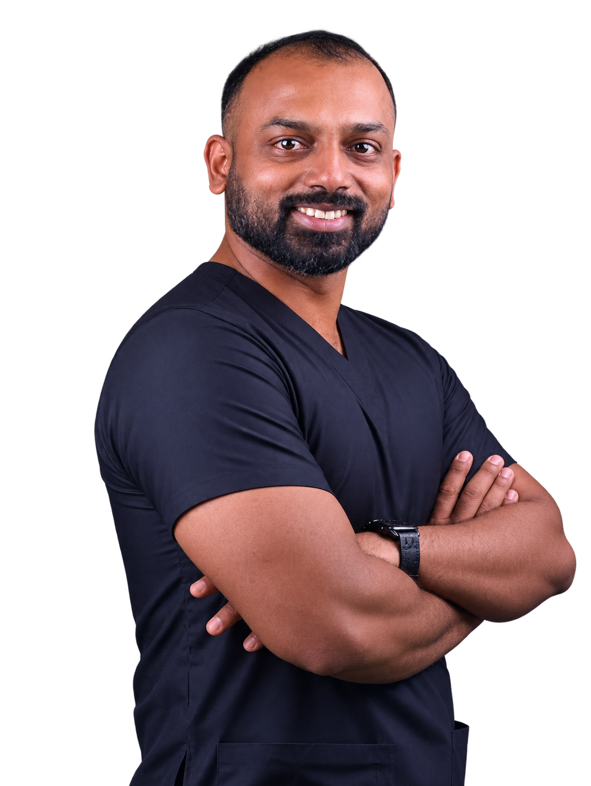

DENTISTRY, THOUGHTFULLY CONSIDERED
Preserving Nature.
Creating Confident
Smiles.
Thoughtful dentistry, advanced treatments and personalised care — designed around your smile.
500+Dentists Trained

Thoughtful dentistry, advanced treatments and personalised care — designed around your smile.
